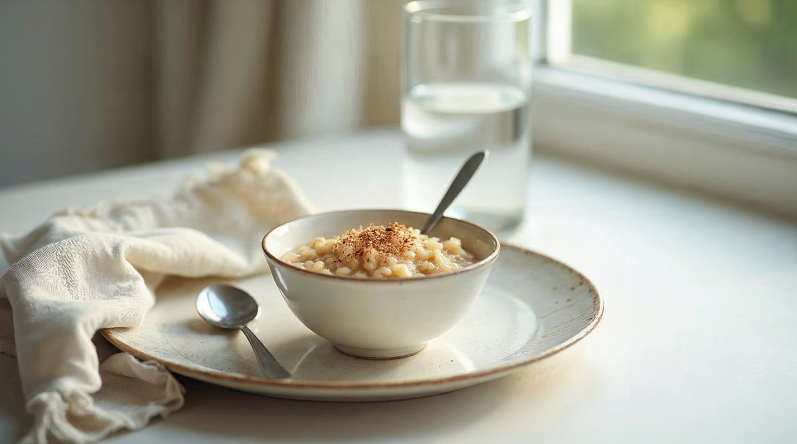

이종호 한의사 감수좋은꿈참사랑한의원 대표원장 (한의사 면허번호 19769)발행 2026-11-23 · 수정 2026-11-27
이 글의 차례
- 왜 배를 만져 보나요
- 복진에서 보는 것
- 왜 배가 단단해지거나 차게 느껴질까요
- 먼저 이렇게 여쭙니다
- 예를 들면 이런 경우입니다
- 배와 잠은 왜 함께 흔들릴까요
- 배가 불편할 때 비슷해 보여도 나눠 보는 것들은요?
- 일상에서 먼저 해 볼 수 있는 것
- 스스로 점검해 보세요
- 얼마나 지켜보고, 언제 상담하면 좋을까요
- 복진에 대해 흔히 듣는 오해는 무엇일까요?
- 복진 전에 이렇게 준비하면 편합니다
- 진료실에서는 이렇게 진행됩니다
- 불편한 자리를 배 그림에 표시해 오시면 좋습니다
- 배가 편해지는지는 무엇으로 알아볼 수 있을까요?
- 이렇게 기록해 오시면 상담이 쉬워집니다
- 이런 증상은 먼저 확인이 필요합니다
- 함께 읽으면 좋은 글
"허리가 아파서 왔는데 배는 왜 만져 보세요?" 진료실에서 가끔 듣는 질문이에요. 낯선 진찰이니 그렇게 물으시는 게 당연해요. 배를 누가 눌러 보는 일이 흔하지 않잖아요.
복진은 손으로 배를 가볍게 눌러 보며 긴장도와 눌렀을 때의 반응, 차고 따뜻한 정도를 살피는 진찰이에요. 소화가 불편하거나 배가 차다고 느낄 때, 몸이 전체적으로 굳어 있을 때 몸 상태를 가늠하는 단서로 쓰거든요.
그러니까 사실은 두 가지를 나눠서 생각하시면 쉬워요. '배가 불편하다'는 것과 '배가 굳어 있다'는 건 다른 얘기예요. 본인은 소화가 멀쩡하다고 느끼는데 손에는 배가 단단하게 느껴지는 분도 계시고, 그 반대인 분도 계시거든요.
왜 배를 만져 보나요
- 소화 불편은 말로 설명하기 어려운 경우가 많아, 손으로 느껴지는 긴장과 반응이 함께 참고가 됩니다.
- 한의학에서는 배의 단단함과 온도 차이를 소화와 몸의 긴장 상태를 살피는 단서로 봅니다.
- 같은 더부룩함이라도 배의 모습이 다르면 생활 조언과 진료 방향이 달라질 수 있습니다.
- 배가 차거나 단단한 느낌은 본인이 먼저 알아차리기 어려운 경우도 있어, 손으로 확인하면 생활 이야기를 나누는 실마리가 됩니다.
- 숨을 쉴 때 배가 얼마나 부드럽게 움직이는지 보면, 평소 긴장한 채로 얕게 숨을 쉬는지 짐작하는 데 참고가 됩니다.
복진에서 보는 것
- 배가 전체적으로 단단한지, 말랑한지
- 누르면 아프거나 불편한 부위가 있는지
- 배꼽 주변과 아랫배의 온도 차이
- 숨 쉴 때 배가 움직이는 모양
- 꾸르륵거리는 소리나 가스가 찬 느낌이 잦은지
- 숨을 들이쉬고 내쉴 때 배가 땅기거나 불편한 곳이 있는지
- 갈비뼈 아래 명치 양옆을 눌렀을 때 단단하거나 답답한지
눌렀을 때 조금 불편하다고 해서 모두 그 자리에 병이 있다는 뜻은 아닙니다. 긴장된 근육도 누르면 불편할 수 있어, 한 가지 반응보다 떨어진 자리와의 차이, 말씀해 주신 증상을 함께 놓고 봅니다.
왜 배가 단단해지거나 차게 느껴질까요
배가 단단하게 느껴지는 가장 흔한 이유 가운데 하나는 긴장입니다. 걱정이 많거나 일에 쫓기면 배 근육에 저도 모르게 힘이 들어가고, 숨이 가슴 위쪽에서만 얕게 오가면서 배가 잘 움직이지 않게 됩니다.
식사 습관도 영향을 줍니다. 급하게 먹으면 공기를 함께 삼키기 쉽고, 한꺼번에 많이 먹으면 위가 늘어나 명치 아래가 땅기는 느낌이 오래 남을 수 있습니다.
오래 앉아 있는 생활은 장의 움직임을 느리게 만들어 아랫배가 묵직하고 가스가 차는 느낌으로 이어지기도 합니다. 변비가 며칠 이어지면 왼쪽 아랫배가 단단하게 만져지는 경우도 있습니다.
배가 차게 느껴지는 데에는 찬 음료와 얇은 옷차림, 냉방, 적은 활동량이 겹치는 경우가 많고, 여성은 월경 주기 앞뒤로 아랫배 느낌이 달라지기도 합니다. 그래서 배를 살필 때는 그날의 식사와 주기, 최근 며칠의 옷차림과 실내 온도까지 함께 여쭙습니다.
먼저 이렇게 여쭙니다
- 식사 뒤 얼마 만에 불편해지고, 얼마나 이어지나요?
- 대변은 며칠에 한 번, 어떤 모양인가요? 소변은 편하신가요?
- 배나 손발이 차다고 느끼시나요?
- 잠은 어떻고, 긴장하면 배가 먼저 불편해지나요?
- 최근 내시경이나 복부 초음파 검사를 받으셨나요?
- 임신 중이거나 가능성이 있나요?
- 하루에 물과 커피는 얼마나 드시고, 찬 음료를 자주 찾으시나요?
- 하루에 앉아 있는 시간은 몇 시간쯤이고, 걷는 시간은 얼마나 되나요?
- 월경 주기에 따라 배의 느낌이 달라지시나요?
예를 들면 이런 경우입니다
- 예를 들어 점심을 급히 먹고 오후마다 더부룩하며 어깨도 늘 뭉친다는 직장인이라면, 명치 주변이 단단한지 살피면서 식사 속도와 업무 중 긴장을 함께 여쭙습니다.
- 예를 들어 시험이 다가오면 배가 자주 아프고 화장실을 찾게 된다는 수험생이라면, 배의 긴장과 함께 잠드는 시각, 아침 식사, 긴장이 커지는 때를 같이 봅니다.
- 예를 들어 아랫배가 늘 차고 변비가 잦다는 어르신이라면, 배꼽 위아래의 온도 차이와 함께 하루에 마시는 물, 걷는 양, 복용 중인 약을 확인합니다.
- 예를 들어 아이를 키우느라 끼니를 서서 급히 해결하고 저녁이면 배가 빵빵해진다는 부모님이라면, 식사 속도와 삼키는 공기, 하루 중 앉아서 먹는 끼니가 몇 번인지 함께 여쭙습니다.
- 예를 들어 회식이 잦은 주마다 아랫배가 묵직하고 변이 묽어진다는 분이라면, 술과 기름진 안주가 겹친 날과 배의 느낌을 짝지어 적어 보시도록 권합니다.
배와 잠은 왜 함께 흔들릴까요
저녁을 늦게 많이 먹으면 누운 뒤에도 위가 바쁘게 움직여 잠이 얕아지기 쉽습니다. 반대로 잠을 설친 다음 날에는 입맛이 들쭉날쭉하고 단 것이나 기름진 음식을 찾게 되는 경우가 많습니다.
긴장이 큰 시기에는 배의 근육과 잠이 함께 굳어 있는 듯한 모습을 자주 봅니다. 그래서 배를 살피는 날에는 잠드는 시각과 자다 깨는 횟수도 같이 여쭙고, 둘 가운데 먼저 손댈 수 있는 쪽부터 생활을 정리해 보시도록 말씀드립니다.
배가 불편할 때 비슷해 보여도 나눠 보는 것들은요?
- 명치가 쓰리고 신물이 올라오는 느낌이 크다면 더부룩함과는 따로, 누워 있을 때와 식후 시간에 따라 어떻게 달라지는지 여쭙습니다.
- 배꼽 주변이 쥐어짜듯 아프다가 화장실에 다녀오면 한결 가벼워지는 일이 반복된다면, 긴장과 배변 습관의 흐름을 함께 봅니다.
- 아랫배가 묵직하면서 대변을 며칠씩 보지 못한다면, 물과 채소 섭취, 걷는 양, 화장실을 참는 습관을 먼저 확인합니다.
- 옆구리나 등 쪽으로 이어지는 통증에 소변 변화가 함께 있다면, 배보다 비뇨기 쪽 확인이 먼저일 수 있어 의료기관 진료를 안내합니다.
- 누웠을 때 배꼽 위가 두근거리는 느낌은 마른 체형에서 흔히 느껴지기도 하지만, 따로 살필 점이 있어 관련 글을 참고하세요(누우면 배꼽 위가 두근두근 뛰는 게 느껴질 때, 복진으로는 무엇을 살피고 언제 병원 검사가 먼저인가요?).

일상에서 먼저 해 볼 수 있는 것
- 끼니 시간을 일정하게 정하고 천천히 꼭꼭 씹어 먹기
- 식사 직후 바로 눕지 말고 10분쯤 가볍게 걷기
- 배가 차게 느껴지면 찬 음료를 줄이고 잘 때 배를 덮고 자기
- 긴장될 때 어깨를 내리고 숨을 천천히 길게 내쉬어 보기
- 잠들기 전 누워 무릎을 세우고 배 위에 두 손을 얹은 채, 손이 오르내리는 것을 느끼며 5분쯤 숨 고르기
- 배를 시계 방향으로 가볍게 쓸어 주되, 누르면 아프거나 불편한 자리는 피하기
- 오래 앉아 일한다면 한 시간에 한 번 일어나 허리를 펴고 몇 걸음 걷기
- 식후에는 허리띠나 꽉 끼는 옷을 느슨하게 풀어 두기
스스로 점검해 보세요
- 식사 뒤 배가 땅기거나 단단해지는 느낌이 자주 든다
- 긴장하면 배가 먼저 아프거나 화장실에 가고 싶어진다
- 배꼽 아래가 손으로 만졌을 때 다른 곳보다 차게 느껴진다
- 가스가 자주 차고 꾸르륵 소리가 잦다
- 변비와 묽은 변이 번갈아 나타난다
- 숨을 깊게 들이쉬기 어렵고 어깨가 먼저 올라간다
여러 항목에 해당하면 진료 때 함께 말씀해 주세요. 배를 살필 때 어디를 더 볼지 정하는 데 도움이 됩니다.
얼마나 지켜보고, 언제 상담하면 좋을까요
- 과식이나 찬 음식 뒤 하루 이틀 더부룩한 정도라면 식사를 가볍게 하며 지켜볼 수 있습니다.
- 더부룩함, 배의 땅김, 배변 불편이 2~4주 넘게 이어지거나 일주일에 여러 번 반복된다면 진료를 받아 보시길 권합니다.
복진에 대해 흔히 듣는 오해는 무엇일까요?
- "배에서 꾸르륵 소리가 자주 나면 장이 나쁘다": 장이 움직이며 나는 소리는 누구에게나 있습니다. 소리보다 그때 아프거나 불편한지, 배변이 어떤지를 함께 봅니다.
- "배가 차면 따뜻하게만 하면 된다": 배를 덮고 자는 것은 도움이 될 수 있지만, 찬 음료와 활동량, 식사 리듬을 함께 살피지 않으면 비슷한 불편이 되풀이되기 쉽습니다.
- "복진으로 어느 장기가 나쁜지 알 수 있다": 복진은 긴장과 온기, 불편한 자리를 살피는 진찰입니다. 장기의 병을 확인하려면 내시경이나 초음파 같은 검사가 필요합니다.
복진 전에 이렇게 준비하면 편합니다
- 배를 잠깐 드러내기 쉽도록 원피스보다는 위아래가 나뉜 옷을 입고 오기
- 배에 수술 자국이 있거나 탈장을 진단받은 적이 있다면 복진 전에 말씀하기
- 월경 중이거나 월경 직전이라 아랫배가 예민하다면 미리 알려 주기
- 간지럼을 잘 타거나 배를 만지는 것이 부담스럽다면 편하게 말씀하기(천천히, 필요한 만큼만 살핍니다)
- 손이 차가운 계절에는 제가 손을 녹인 뒤 살피니, 차가운 손이 걱정되셔도 괜찮습니다
복진은 짧게 끝나는 진찰이지만, 마음이 편해야 배의 힘도 빠지고 느낌도 정확해집니다. 불편한 점이 있으면 언제든 멈추고 이야기를 나눌 수 있습니다.

진료실에서는 이렇게 진행됩니다
손으로 가볍게 만져 보며, 불편하면 바로 말씀해 주시면 멈춥니다. 식사 직후나 방광이 가득 찼을 때는 불편할 수 있어 진료 직전에는 식사를 과하게 하지 않는 것이 좋습니다. 임신 중이거나 임신 가능성이 있다면 복진 전에 먼저 알려 주세요.
좋은꿈참사랑한의원에서는 모든 분의 맥을 먼저 짚고 소화 불편과 생활을 충분히 들은 뒤, 필요하다고 판단될 때 복진과 함께 설진으로 몸 상태를 살피고 침이나 한약 상담 등 상태에 맞는 방법을 정합니다.
첫 방문에는 모든 분의 맥을 먼저 짚고, 불편이 언제, 어떤 식사 뒤에 생기는지와 잠·대소변·몸의 온기·마음의 긴장을 여쭈며 경고 신호가 없는지 확인합니다. 이어서 혀를 보고, 필요하다고 판단되면 배의 긴장과 온기, 불편한 자리를 살핍니다.
가져오신 식사 기록이나 내시경·초음파 결과를 함께 보고, 오늘 살핀 내용과 치료 방향, 다음 진료까지 바꿔 볼 생활 한 가지를 설명드립니다. 다시 오실 때도 맥부터 다시 짚습니다.
불편한 자리를 배 그림에 표시해 오시면 좋습니다
배가 불편한 자리는 말로 설명하기가 의외로 어렵습니다. 종이에 배를 가로세로 세 칸씩, 아홉 칸으로 나눠 그리고 불편한 칸에 표시해 보세요.
- 명치, 배꼽 주변, 아랫배, 왼쪽과 오른쪽 옆구리 가운데 어디인지 칸으로 표시하기
- 그 자리가 쓰린지, 땅기는지, 묵직한지, 쥐어짜는지 한 단어로 적기
- 식사 뒤 몇 분 만에 시작됐는지, 화장실에 다녀온 뒤 어떻게 달라졌는지 적기
- 일주일쯤 모아 보면 늘 같은 자리인지, 날마다 옮겨 다니는지가 보입니다
이 그림을 가져오시면 배를 살필 때 어디부터 볼지 정하기 쉽고, 다음 진료 때 지난번과 견주어 보기도 편합니다. 휴대전화 메모장에 칸 번호만 적어 두셔도 괜찮습니다. 그림 솜씨는 전혀 상관없으니, 기억날 때 바로 적는 것을 가장 중요하게 여겨 주세요.
배가 편해지는지는 무엇으로 알아볼 수 있을까요?
배가 편해지는 과정은 하루아침보다 몇 주에 걸친 흐름으로 보는 경우가 많습니다. 저는 아래 같은 생활 속 신호를 함께 여쭤 보며 다음 진료 방향을 정합니다.
- 식후 불편이 이어지는 시간이 짧아졌는지
- 가스가 차거나 배에서 소리가 나는 날이 줄었는지
- 대변 보는 날짜와 모양이 조금 더 일정해졌는지
- 숨을 깊게 들이쉬었을 때 배가 덜 땅기는지
- 배가 불편해서 잠을 설치는 날이 줄었는지
- 긴장되는 일이 있어도 배가 먼저 반응하는 일이 덜해졌는지
배를 살필 때의 단단함이나 온기도 함께 보지만, 그날의 컨디션에 따라 달라지기 쉬워 손에 느껴지는 것보다 직접 지내면서 느끼시는 변화가 더 중요한 단서가 됩니다.
이렇게 기록해 오시면 상담이 쉬워집니다
배는 그날 먹은 것, 그날 받은 긴장에 따라 하루에도 느낌이 달라져요. 원래 그래요. 그래서 진료실에서 제 손에 느껴지는 몇 분보다, 며칠 동안 적어 오신 기록이 더 많은 걸 알려 주는 경우가 많거든요.
- 식사 뒤 몇 분 만에 불편해지는지, 얼마나 이어지는지
- 더부룩함, 신물, 쓰림, 설사, 변비 가운데 어느 쪽이 큰지
- 복용 중인 약, 술 섭취 여부와 최근 체중 변화
- 받은 내시경·초음파 검사 결과(있다면)
- 눌렀을 때 아팠던 자리와 그 무렵 먹은 음식
- 하루에 마시는 물과 커피의 양
드시는 약은 봉투째 가져오시거나 사진으로 찍어 오셔도 돼요. 복용 중인 약은 처방한 의사와 상의 없이 줄이거나 끊지 않습니다.
배를 살피고 맥과 맞춰 보는 건 제가 할게요. 대신 하나만 부탁드려요. 끼니를 서서, 급하게 드시는 날이 많다면 하루 한 끼만이라도 앉아서 천천히 드셔 보세요. 딴 건 하시던 대로 편하게 지내셔도 돼요.
소화 불편이 주된 고민이라면 식후 더부룩함 글도 함께 참고하세요.
배가 늘 더부룩하면 별것 아닌 일에도 하루가 무겁게 느껴지실 수 있어요. 혼자 참고 지내기보다 한 번 같이 들여다보시죠. 궁금한 건 그냥 편하게 물어보세요. 배와 몸의 사정을 차근차근 함께 살펴보겠습니다.
이런 증상은 먼저 확인이 필요합니다
- 갑자기 시작된 심한 복통, 살짝 눌러도 심하게 아프거나 배가 판자처럼 딱딱하게 굳은 경우
- 검은 변, 혈변, 피를 토한 경우
이런 신호가 있으면 한의원보다 가까운 병원이나 응급실을 먼저 찾으세요.
함께 읽으면 좋은 글
- 한의원 문진에서 몸의 따뜻함, 소화, 잠, 대소변, 통증은 왜 함께 묻나요?
- 허리가 아파서 왔는데 대변과 소변은 왜 묻나요?
- 허리나 목이 아파서 갔는데 배와 팔을 눌러 보는 이유는 무엇인가요?

여쭙는 것
- 식사 뒤 얼마 만에 불편해지고, 얼마나 이어지나요?
- 대변은 며칠에 한 번, 어떤 모양인가요? 소변은 편하신가요?
- 배나 손발이 차다고 느끼시나요?
생활에서 해 볼 것
- 끼니 시간을 일정하게 정하고 천천히 꼭꼭 씹어 먹기
- 식사 직후 바로 눕지 말고 10분쯤 가볍게 걷기
- 배가 차게 느껴지면 찬 음료를 줄이고 잘 때 배를 덮고 자기
먼저 확인이 필요한 신호
- 갑자기 시작된 심한 복통, 살짝 눌러도 심하게 아프거나 배가 판자처럼 딱딱하게 굳은…
- 검은 변, 혈변, 피를 토한 경우
한눈에 보는 표
| 구분 | 핵심 |
|---|---|
| 여쭙는 것 | 식사 뒤 얼마 만에 불편해지고, 얼마나 이어지나요? 대변은 며칠에 한 번, 어떤 모양인가요? 소변은 편하신가요? |
| 생활에서 해 볼 것 | 끼니 시간을 일정하게 정하고 천천히 꼭꼭 씹어 먹기 식사 직후 바로 눕지 말고 10분쯤 가볍게 걷기 |
| 먼저 확인이 필요한 신호 | 갑자기 시작된 심한 복통, 살짝 눌러도 심하게 아프거나 배가 판자처럼 딱딱하게 굳은 경우 검은 변, 혈변, 피를 토한 경우 |
자주 묻는 질문
배를 눌렀을 때 아프면 이상이 있는 건가요?
눌렀을 때 아픈 이유는 다양하며 한 가지로 단정하지 않고, 필요하면 다른 의료기관 검사를 권합니다.
옷은 어떻게 입고 가면 되나요?
배를 확인하기 쉬운 편한 옷이 좋습니다.
모든 환자가 복진을 받나요?
아닙니다. 맥부터 짚어 보고, 말씀해 주신 증상에 따라 필요하다고 판단될 때 합니다.
복진은 아프지 않나요?
손으로 가볍게 눌러 보며 살피는 진찰입니다. 누르는 동안 불편하거나 아프면 바로 말씀해 주세요. 곧바로 멈춥니다.
임신 중에도 복진을 하나요?
임신 중이거나 가능성이 있으면 미리 알려 주세요. 필요한지 먼저 판단하고, 하지 않는 경우도 있습니다.
좋은꿈참사랑한의원은 재진 때 지난번 이야기부터 이어서 여쭙니다. 진료시간과 예약은 오시는 길에서 확인하세요.
어디서 상담받을 수 있나요?
좋은꿈참사랑한의원은 서울 동작구 만양로2길 2 신성빌딩 3층·5층(서울 동작구 상도동, 7호선 상도역 3번 출구 근처)에 있습니다. 한의사 3명(이종호 대표원장, 조영기 수석진료원장, 정원영 진료원장)이 진료합니다. 진료시간은 평일 09:30~20:00(점심 13:00~14:00), 토·일·공휴일 09:30~15:00이며, 방문 전 전화로 확인을 권합니다. 예약은 네이버 예약, 카카오톡 상담, 전화 02-815-7510로 받습니다.
이 글은 일반적인 건강 정보이며 개인의 진단이나 치료를 대신하지 않습니다. 증상이 있거나 복용 중인 약이 있다면 진료를 통해 확인하세요. 치료 효과는 개인마다 다를 수 있습니다.
작성 기준: 일반적으로 알려져 있는 건강 정보를 참고해 정리했습니다(대표원장 감수). 증상 기록은 1~2주 동안 하루 1회, 비슷한 시간에 적어 오시면 지난 상태와 비교하기 쉽습니다.